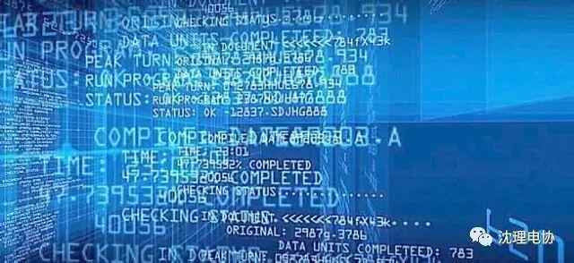
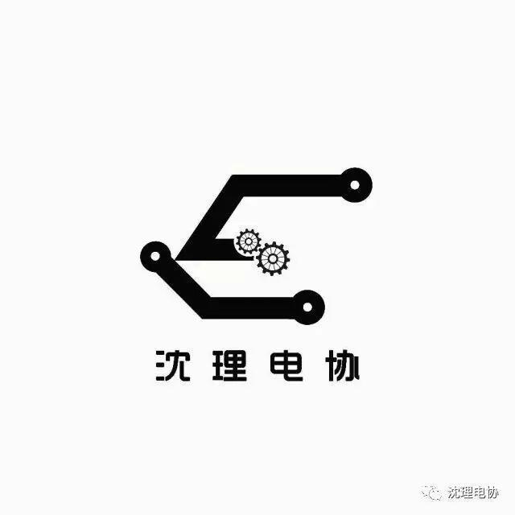
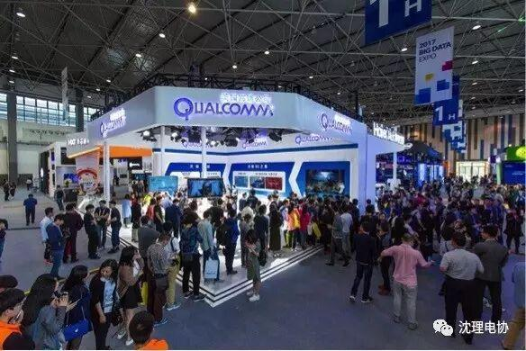
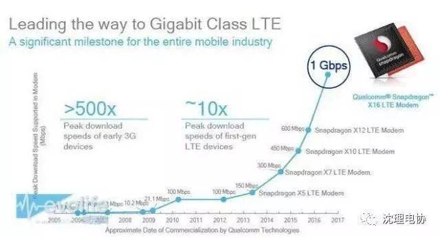
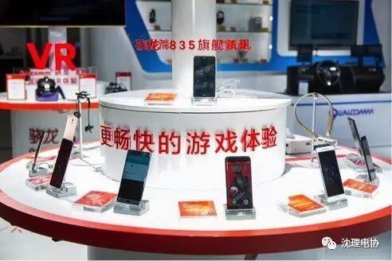
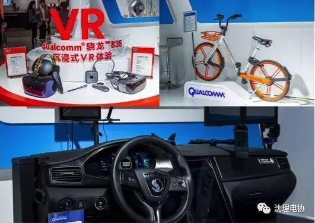

高通亮相2017数博会的三个关键词：5G、物联网、人工智能
CNET科技资讯网 5月26日 贵阳消息：
由国家发改委、国家工业和信息化部、国家网信办和贵州省人民政府联合主办的2017数博会（2017中国国际大数据产业博览会) 于5月25日在贵阳开幕。作为全球无线通信技术的“老大哥”，高通已经是这一国家级大数据会议“老面孔”，连续第三年亮相。在“人工智能高峰对话”环节，高通全球总裁德里克·阿博利（Derek Aberle）解析了未来5G网络下的物联网、云计算、人工智能形态，并表示：“人工智能正步入终端设备，终端侧的人工智能可以对云端智能进行补充。”
CNET科技资讯网 5月26日 贵阳消息：
由国家发改委、国家工业和信息化部、国家网信办和贵州省人民政府联合主办的2017数博会（2017中国国际大数据产业博览会) 于5月25日在贵阳开幕。作为全球无线通信技术的“老大哥”，高通已经是这一国家级大数据会议“老面孔”，连续第三年亮相。在“人工智能高峰对话”环节，高通全球总裁德里克·阿博利（Derek Aberle）解析了未来5G网络下的物联网、云计算、人工智能形态，并表示：“人工智能正步入终端设备，终端侧的人工智能可以对云端智能进行补充。”

信息海洋

作为参展商之一，高通展台位于贵阳国际会议展览中心1号展馆1008A，毗邻BAT展台，标志性的“Qualcomm”被一身白色涂装映衬得十分醒目，展台分为5G、移动连接体验（骁龙移动平台）、万物互联（物联网、车联网）等区域，基本涵盖了高通最新的技术、产品组合和解决方案，以及高通的中国合作伙伴成果。





芯片图解
为5G商用铺路
4G正热，5G先行。今年的政府工作报告中首次提到“第五代移动通信技术(5G)”并提出要加大5G技术的研发和转化。高通正深耕5G，为5G商用铺路。在此次数博会上，高通展示了多项5G技术，其中包括骁龙X50 5G调制解调器技术——将通过单芯片支持2G/3G/4G/5G多模，支持全球5G新空口标准和千兆级LTE，高通因此成为了首家发布5G调制解调器解决方案的公司。作为5G移动体验的重要支柱，高通在千兆级LTE也取得了突破，推出了全球首款千兆级LTE调制解调器骁龙X16，能够提供“光纤级”的无线网络速度，实现了世界上首款千兆级终端和商用网络体验。集成X16千兆级LTE调制解调器的骁龙835移动平台，也为已经发布的三星S8以及小米6带来强性能和卓越连接体验。近期，高通又发布了第二代千兆级 LTE 调制解调器骁龙X20，带来高达1.2Gbps的下行峰值速率，其灵活领先的技术，将帮助全球大量运营商部署千兆级LTE网络。

高通合作伙伴基于骁龙平台发布的智能终端，带来连接、游戏、视觉画面等体验

从“芯”武装物联网，助推数字化行业变革高通也将无线连接和移动计算等技术扩展至物联网领域，提供了超过25款基于物联网的平台解决方案，为可穿戴智能设备、智慧家庭、智慧城市、无人机、机器人以及车联网等细分物联网应用场景提供更多可能，助推全行业的发展和变革。虚拟现实再次成为高通展区中的一大亮点。最新搭载骁龙835移动平台的VR设备在视觉、听觉和交互方面都实现了升级，同时与包括暴风影音、爱奇艺在内的中国厂商合作发布的基于骁龙平台的VR一体机。在智慧城市领域，高通展示的多种创新应用和城市“连接”；在智慧车联网领域，高通也展示了Dashboard解决方案；此外还有无人机和应用机器人现场秀。另外，高通还将一辆“特别”的摩拜单车搬到了展区，之所以特别，是因为这款共享单车的智能车锁搭载了一颗高通面向物联网的调制解调器。就在几天前的5月23日，高通与中国移动研究院及摩拜单车展开合作，启动中国首个eMTC/NB-IoT/GSM（LTE Cat M1/NB1和E-GPRS）多模外场测试，可以利用中国移动的2G/4G多模网络，把高通面向物联网应用的MDM9206全球多模LTE IoT调制解调器应用在摩拜单车的智能车锁上，摩拜单车用户因此能够更加精准地识别可用单车、加快智能锁开锁速度，并对单车状态持续监测、实时管理



公众号
sylgdzxh


图文来源于网络如有侵权联系编者删除